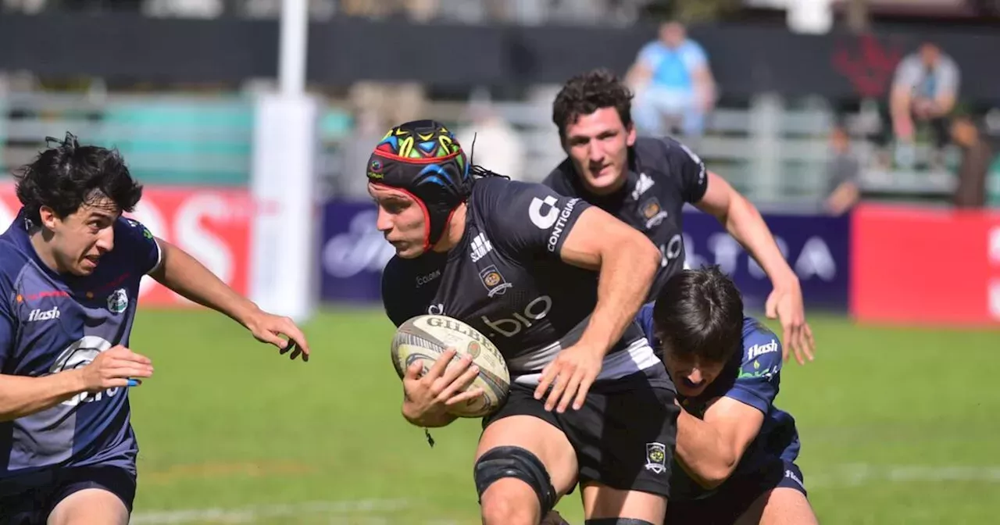

Los blanquinegros les ganaron 41-18 a los riocuartenses en un partido en el cual jugaron desde el inicio con uno
menos por una expulsión. Así, se subieron al podio.Tala-Urú Curé, la definición por el tercer puesto del Top 10
2024 de la Unión Cordobesa de Rugby, en Córdoba Athletic.
El partido comenzó con las pulsaciones al máximo y con impulso para Uru Curé que, además de ponerse 8 a 0
arriba, jugaba con uno más desde temprano por la expulsión de Mateo Soler a los 2m por un tackle peligroso.

En una emocionante jornada de rugby, el Tala Rugby Club, logró una convincente victoria sobre Gimnasia y Esgrima
de Rosario con un marcador de 24-7. El partido, disputado en el estadio del Tala, vio al equipo local desplegar
un juego dinámico y estratégico, que les permitió dominar a lo largo de todo el encuentro.

Los blanquinegros les ganaron 41-18 a los riocuartenses en un partido en el cual jugaron desde el inicio con uno
menos por una expulsión. Así, se subieron al podio.Tala-Urú Curé, la definición por el tercer puesto del Top 10
2024 de la Unión Cordobesa de Rugby, en Córdoba Athletic.
El partido comenzó con las pulsaciones al máximo y con impulso para Uru Curé que, además de ponerse 8 a 0
arriba,
jugaba con uno más desde temprano por la expulsión de Mateo Soler a los 2m por un tackle peligroso.